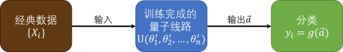

5.2 量子机器学习¶
从《2001：太空漫游》中HAL9000的惊鸿一瞥，到大卫·杰洛德在《When HARLIE Was One》中对何为人类的探讨，再到近年《心理测量者》等对交由AI管理的反乌托邦社会的存在的合理性的思考，半个余世纪以来，伴随着计算机科学的飞速发展，人工智能成为了最引人注目的方向之一。这或许是千百年来人类“造物”畅想和现实最接近的一次。诸多科幻作品中描绘的足以撼动现代文明根基的新一代智慧生命的诞生可能离21世纪还很遥远，但如Siri、Cortana这般具备自我学习功能的程序已经深入到普通人的生活之中。
而机器学习正是实现人工智能的重要途径，其关注于通过经验自动改进的计算机算法的研究。换言之，我们期冀通过某些算法使计算机“学会”自行分析某一类数据中的规律，并利用获得的规律对未知数据进行预测。常见的机器学习算法可以分为监督学习、无监督学习和强化学习三类。监督学习从给定目标的训练集中学习得到某个函数，并通过函数对未知数据进行预测，本节着重讨论的分类器便是一例。无监督学习与监督学习相比，训练集不进行人为的目标标注，常见的有聚类算法。强化学习同样没有目标标注，而会对输入有着具有延时性的某种奖惩反馈，算法会随着环境的变动而逐步调整其行为，监督学习与无监督学习的数据之间是独立的，而强化学习存在前后依赖关系。Q-Learning是典型的强化学习算法。
如前文所言，量子计算机有着不容小觑的并行计算能力，而对于机器学习，强大的算力正是其需要的。这样，两者便有了结合的前提。本书其他章节介绍的变分本征求解器（VQE）、量子近似优化算法（QAOA算法）等便是其中的代表。包括上述在内的诸多目前被广泛讨论的量子机器学习算法都属于量子-经典混合算法的范畴。令量子计算机处理其擅长的部分，其余工作交给经典计算机，是一个较为现实的方案。
接下来以监督学习中的分类问题为例进行讨论。
鸢尾花数据集是机器学习中常用的数据集，由三种各50组鸢尾花样本构成。每个样本包含4个特征，分别为萼片(sepals)及花瓣(petals)的长和宽。我们要做的是从中抽取一部分样本对量子分类器进行训练，学习完成后，将剩余的样本用于分类测试，并期望预测的成功率尽可能高。图5.2.1，介绍了一种算法结构。

图5.2.1 一种算法结构
1. 将经典的鸢尾花数据 \(X_{i}\) 输入到某个带参数 \(\vec{\theta}\) 的量子线路 \(Q C\) 中，其中 \(\vec{\theta}\) 的初始值为 \(\vec{\theta}\) 。
2. 经测量操作线路输出向量 \(\vec{a}\) ，通过某个映射 \(g(\vec{a})\) 得到对数据 \(X_{i}\) 的分类预测 \(y_{i}\) 。
3. 将分类预测 \(y_{i}\) 与训练集中给定的真实分类结果 \(Y_{i}\) 进行对比，并计算损失函数 \(f[y_{i}(\vec{\theta})\) , \(Y_{i}]\) 。
4. 返回第一步，将剩余的鸢尾花数据 \(X_{i^{'}}\) 依次输入到线路 \(Q C\) 中，得到对应的 \(f[y_{i}(\vec{\theta})\) , \(Y_{i}^{\prime}]\) ，并计算总代价函数 \(\sum_{i \in S e t} f[y_{i}(\vec{\theta})\) , \(Y_{i}] / \mid Set \mid\) 。
5. 利用经典计算机对代价函数进行最小化，重复更新线路中的参数 \(\theta_{j}(j=1, \ldots , n)\) ，直到优化到截止条件 。
这个算法的核心在于量子线路 \(Q C\) 的设计，首先我们需要考虑如何将经典数据输入到 \(Q C\) 中。常用的编码方式有两种，分别是编码到线路参数与编码到态振幅上。 对于本题而言，每个样本 \(X_{i}\) 都有4个特征。如果采取第一种方式，我们可以将每个特征分别编码到一个量子比特的初态上。例如图5.2.2：

图5.2.2 第一种编码方式
如果采取第二种编码方式，希望得到量子态：
显而易见，这种编码方式能更好地节约量子比特。但与此同时，它的制备过程也更加复杂，如图5.2.3：

图5.2.3 第二种编码方式
其中
事实上，对于包含 \(m\) 个特征的数据来说，采用第一种方案我们需要 \(0(m)\) 个量子比特和 \(0(1)\) 的线路深度，采用第二种方案我们需要 \(0(\log m)\) 个量子比特和 \(O(m)\) 的线路深度。
成功将经典数据编码到量子态后，需要考虑利用已有的量子比特或外加部分辅助比特设计量子线路。在设计线路时要尽快将量子比特纠缠起来。

图5.2.4 一种较为常用的线路设计
图5.2.4是一种较为常用的线路设计。我们知道，所谓的各种量子门，本质上都是对态进行酉变换。（注意：当引入辅助比特时，线路对总的量子态依然进行酉变换 操作，但对于待测量部分的变换末必是酉的。）所以，将经典数据 \(X_{i}\) 编码到初态并利用含参数 \(\vec{\theta}\) 的量子线路进行操作的全过程就是对 \(X_{i}\) 进行了映射，只不过这种 映射与经典函数映射不同，发生在欧式空间与希尔伯特空间之间。但这种映射依然可以理解为一个形如 \(h_{\vec{\theta}}\left(X_{i}\right)\) 的函数，与经典的机器学习类似。 考虑将经典数据 \(X_{i}\) 映射到量子态 \(\left|\psi\left(X_{i}\right)\right\rangle\) 上，经过线路 \(U(\vec{\theta})\) ，在 \({z}\) 方向上进行测量，得到比特串 \(\vec{\ a_{k}}\) 的概率
希望每次测量后与真实分类结果 \(Y_{i}\) 对应的 \(\vec{\ a_{a(i)}}\) 中的元素（换言之，任取 \(\vec{a} \in\{\vec{\ a_{a(i)}}\}\) ，满足 \(Y_{i}=g(\vec{a})\) ) 出现的概率尽可能大，这样才能更加准确地进行分类预测。虽然我们很难直接从量子线路中读取到相关的概率分布，但可以通过多次测量，利用 \(\vec{\ a_{k}}\) 出现的频率 \(n_{k} / N\) 对概率 \(p_{i k}\) 进行估计。这样，待办事项转化为对线路重复测量，选取出现总频数 \(N_{j}=\sum_{\vec{\ a_{k}} \in\{\tilde{a_{j}}\}} n_{k}\) 最高的比特串组 \(\{\vec {a_{j}}\}\) ，得到与之对应的分类预测 \(y^{j}\) ，记为 \(y_{i}\) 。 显然，对尚末完成优化过程的分类器而言，其关于样本 \(X_{i}\) 的分类预测 \(y_{i}\) 并不能时常与真实的分类结果 \(Y_{i}\) 对应。可以以如下方式构造损失函数（方法不唯一）：
设 \(Y_{i}=y^{\alpha(i)}\) ，其余两类分别为 \(y^{\beta(i)}\) 与 \(y^{\gamma(i) \text { }}\) 则
记
有
取一阶近似，
其中
为 \(Sigmoid\) 函数，常用于机器学习中。 计算总代价函数
其中 \(N_{i}\) 为某一组参数 \(\vec{\theta}\) 下 ，对样本 \(X_{i}\) 输入到线路后，进行的有效的重复测量次数， \(N_{\alpha(i)}^{i}\) 为测量得到 \(Y_{i}\) 的次数，而 \(\mid Set\mid\) 是数据集的大小。 总代价函数是参数 \(\vec{\theta}\) 与数据集 \(\{X_{i}, Y_{i}\}\) 的函数，利用经典计算机对其采取最小化并不断对参数进行更新，直到优化到截止条件。我们完成了对分类器的训练过程。 当我们需要对新的数据进行预测或测试时，利用参数优化到 \(\vec{\theta}\) 的 \(Q C\) 执行训练过程的前两步即可。
图5.2.5 分类器的训练过程
1. 将待分类的鸢尾花数据 \(X_{i}\) 输入到训练完成的量子线路 \(Q C\) 中，其中 \(\vec{\theta}\) 的值为 \(\vec{\theta^{'}}\) 。
2. 经测量操作线路输出向量 \(\vec{a}\) ，通过映射 \(g\) 得到对数据 \(X_{i}\) 的分类预测 \(y_{i}\) 。
实䟠出真知，让我们看看实际效果如何。
从数据集中随机挑选120组数据进行训练，采取第一类编码方式，利用本节介绍的线路设计方窣，线路深度为4层。优化方法为Powell法。比特串与分类预测的对 应关系如下：
1. \(0001、0010、0100、1000\) ：山鸢尾
2. \(1110、1101、1011、0111\) : 杂色鸢尾;
3. \(0011、0110、1100、1001\)：维吉尼亚鸢尾。
最终将代价函数优化到0.045，利用剩余30组数据进行测试。结果如图5.2.6。

图5.2.6 结果
可见，对于新数据的预测成功率保持在较高的水准，训练过程不存在过拟合的情况。不过同时我们也能看到，杂色鸢尾与维吉尼亚鸢尾之间似乎比其与山鸢尾之间更不易区分。这是否与我们分类器的设计有关？该问题就留待读者朋友自行思考了。（提示：请关注比特串与分类预测的对应关系。）
本节以机器学习中常见的鸢尾花数据集分类问题为例，介绍了量子分类器的基本模型。但如同经典分类算法一样，实际操作中可能需要考虑核函数构造等更加复杂的问题，囿于篇幅所限，不在这里一一赘述。如果您日后打算更加深入地探究相关问题，请务必牢记，尽管与经典函数有着诸多不同，但量子线路的作用依然是为数据提供了某种映射操作，这是量子分类器能够生效的核心原因。当您希望针对某一问题进行改进时，不妨关注线路映射的空间。
不止于此，乃至更广阔的量子机器学习迄今依然是一个值得进入的研究领域，一方面，诸如量子分类器、量子生成对抗网络等在内的有价值的算法还在不断涌现，另一方面，仍有许多像“复杂数据集如何映射”的有趣问题尚待解决。这个领域欢迎更多志同道合的朋友共同探索新的进展。
本节用到的鸢尾花分类器的Python代码示例：
1.from pyqpanda import *
2.from pyqpanda.Algorithm.hamiltonian_simulation import *
3.from scipy.optimize import minimize
4.import sklearn.datasets as datasets
5.import numpy as np
6.import math
7.from functools import partial
8.
9.def initial_state(qubitlist, x):
10. qcir=QCircuit()
11. for qubit in qubitlist:
12. qcir.insert(H(qubit))
13. qcir.insert(RZ(qubitlist[0], -2 * math.pi * (x[0] - 4.3) / 3.6)) \
14. .insert(RZ(qubitlist[1], -2 * math.pi * (x[1] - 2) / 2.4)) \
15. .insert(RZ(qubitlist[2], -2 * math.pi * (x[2] - 1) / 5.9)) \
16. .insert(RZ(qubitlist[3], -2 * math.pi * (x[3] - 0.1) / 2.4))
17. return qcir
18.
19.def Uloc(qubitlist, theta_y, theta_z):
20. qcir=QCircuit()
21. for i in range(len(qubitlist)):
22. qcir.insert(RY(qubitlist[i], -theta_y[i])) \
23. .insert(RZ(qubitlist[i], -theta_z[i]))
24. return qcir
25.
26.def Uent(qubitlist):
27. qcir=QCircuit()
28. for i in range(len(qubitlist) - 1):
29. qcir.insert(CZ(qubitlist[i], qubitlist[i + 1]))
30. qcir.insert(CZ(qubitlist[0], qubitlist[len(qubitlist) - 1]))
31. return qcir
32.
33.def Meas(result, y):
34. freq_y = 0
35. if y == 0:
36. for i in result:
37. if i == '0001' or i == '0010' or i == '0100' or i == '1000':
38. freq_y+=result[i]
39. if y == 1:
40. for i in result:
41. if i == '1110' or i == '1101' or i == '1011' or i == '0111':
42. freq_y+=result[i]
43. if y == 2:
44. for i in result:
45. if i == '0011' or i == '0110' or i == '1100' or i == '1001':
46. freq_y+=result[i]
47. return freq_y
48.
49.def loss(result, y, label_class):
50. freq_total = 0
51. freq = []
52. for i in range(label_class):
53. freq.append(Meas(result, i))
54. freq_total += Meas(result, i)
55. freq_without_y = list(freq)
56. del freq_without_y[y]
57. loss_value = 1 / (1 + math.exp(-(math.sqrt(freq_total) * (max(freq_without_y) - freq[y]) / math.sqrt((freq_total - freq[y]) * freq[y]))))
58. return loss_value
59.
60.def cost(theta, x, y, qubit_num, depth, label_class):
61. cost_value=0
62. theta_y = np.zeros((depth, qubit_num))
63. theta_z = np.zeros((depth, qubit_num))
64. for i in range(depth):
65. for j in range(qubit_num):
66. theta_y[i][j] = theta[2 * i * qubit_num + 2 * j]
67. theta_z[i][j] = theta[2 * i * qubit_num + 2 * j + 1]
68. for i in range(len(y)):
69. init(QMachineType.CPU)
70. qubitlist = qAlloc_many(qubit_num)
71. prog = QProg()
72. prog.insert(initial_state(qubitlist, x[i])) \
73. .insert(Uloc(qubitlist, theta_y[0], theta_z[0]))
74. for j in range(1,depth):
75. prog.insert(Uent(qubitlist)) \
76. .insert(Uloc(qubitlist, theta_y[j], theta_z[j]))
77. directly_run(prog)
78. result = quick_measure([qubitlist[0],qubitlist[1],qubitlist[2],qubitlist[3]], 2000)
79. cost_value += loss(result, y[i], label_class)
80. finalize()
81. cost_value /= len(y)
82. print(cost_value)
83. return cost_value
84.
85.def binding(x, y, qubit_num, depth, label_class):
86. return partial(cost, x=x, y=y, qubit_num=qubit_num, depth=depth, label_class=label_class)
87.
88.def test(theta, x, qubit_num, depth, label_class):
89. y_predict = []
90. theta_y = np.zeros((depth, qubit_num))
91. theta_z = np.zeros((depth, qubit_num))
92. for i in range(depth):
93. for j in range(qubit_num):
94. theta_y[i][j] = theta[2 * i * qubit_num + 2 * j]
95. theta_z[i][j] = theta[2 * i * qubit_num + 2 * j + 1]
96. for i in range(len(x)):
97. init(QMachineType.CPU)
98. qubitlist = qAlloc_many(qubit_num)
99. prog = QProg()
100. prog.insert(initial_state(qubitlist,x[i])) \
101. .insert(Uloc(qubitlist,theta_y[0],theta_z[0]))
102. for j in range(1,depth):
103. prog.insert(Uent(qubitlist)) \
104. .insert(Uloc(qubitlist, theta_y[j], theta_z[j]))
105. directly_run(prog)
106. result = quick_measure([qubitlist[0],qubitlist[1],qubitlist[2],qubitlist[3]], 2000)
107. freq=[]
108. for j in range(label_class):
109. freq.append(Meas(result, j))
110. for j in range(label_class):
111. if freq[j] == max(freq):
112. y_predict.append(j)
113. break
114. finalize()
115. return y_predict
116.
117.def success_rate(predict_Y, test_Y):
118. success=0
119. fail=0
120. for i in range(len(predict_Y)):
121. if (predict_Y[i] == test_Y[i]):
122. success+=1
123. else:
124. fail+=1
125. return success,fail
126.
127.def data_shuffle_and_make_train_test(data, label, train_percentage = 0.8):
128. n_data = len(label)
129. permutation = np.random.permutation(range(n_data))
130. n_train = int(n_data * train_percentage)
131. n_test = n_data - n_train
132. train_permutation = permutation[0:n_train]
133. test_permutation = permutation[n_train:]
134. return data[train_permutation], label[train_permutation], data[test_permutation], label[test_permutation]
135.
136.qubit_num = 4
137.depth = 4
138.label_class=3
139.data, label = datasets.load_iris(return_X_y=True)
140.data, label, test_d , test_l = data_shuffle_and_make_train_test(data,label)
141.theta = np.random.random_sample(2 * qubit_num * depth)
142.result = minimize(binding(data, label, qubit_num, depth, label_class), theta, method = 'Powell')
143.
144.y_predict = []
145.theta = result.x
146.y_predict = test(theta, test_d, qubit_num, depth, label_class)
147.success, fail = success_rate(y_predict, test_l)
148.print(test_l)
149.print(np.array(y_predict))
150.print(success/(success+fail))